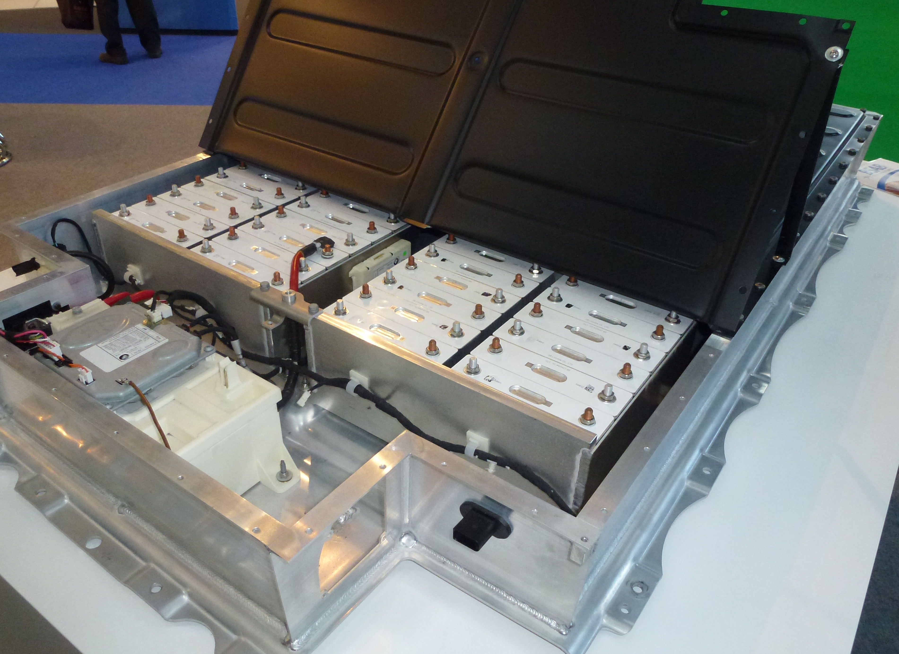

In the first project is about trying to hired at Tesla for a Software Position as well as showing my resume at the.
In this memo I gave my reason I why I am the perfect candidate for the position.
One of ways I was able to show that in the memo was how I algin with them with their values.
Tesla is determined to have a sustainable energy as well as being the future for self driving cars.
In the first project is about trying to hired at Tesla for a Software Position as well as showing my resume at the.
In this memo I gave my reason I why I am the perfect candidate for the position.
One of ways I was able to show that in the memo was how I algin with them with their values.
Tesla is determined to have a sustainable energy as well as being the future for self driving cars.
This project was about creating an infrographic for the a company that you got hired from project two. In this project I did an infrographic about the Tesla Superchargers for new customers.
I wanted to show for new customer how well connect the Superchargers are and how widespread the Superchargers are which can get rid of range anxiety for customer who want have road trips.
 This project was about creating a manual. The manual that I choose to create was about the fundamental of programming. I want to give a sense how important the fundamentals are as we professional might forget that and that could decrease our performance.
creating a manual for a programmer was hard as a there is not a right way to start or to end of our work. In the manual I suggest to test the code frequently as there is a higher possible chance to fix a bug immediate instead of trying to figure with function or which code is not working.
This project was about creating a manual. The manual that I choose to create was about the fundamental of programming. I want to give a sense how important the fundamentals are as we professional might forget that and that could decrease our performance.
creating a manual for a programmer was hard as a there is not a right way to start or to end of our work. In the manual I suggest to test the code frequently as there is a higher possible chance to fix a bug immediate instead of trying to figure with function or which code is not working.

This project was about creating a proprosal that would improve the company. My proprosal was about advancing the battery technology. Even though at the begining, Tesla so adhead of the competition almost no other car company was able to compete with Tesla.
Unitl now, Chinese car companies are not only catching up but are also beating Tesla with the technology. One way of trying to complete with the Chinese car companies is research into different kinds of element would improve the battery's life and range.
Also we would get professional research and we would university to help out with research.